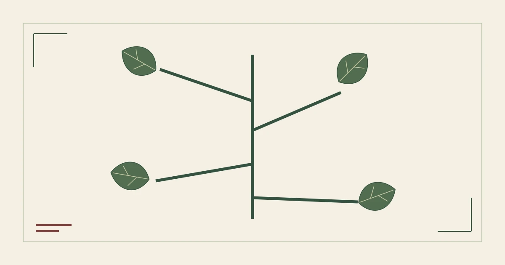

%%S3_EYEBROW%%
%%S3_TITLE%%
%%S3_CATALOG_LABEL%%%%S3_STATUS%%

标本页签
%%S3_H2_1%%
%%S3_TEXT_1%%
%%S3_ROOT_TITLE%%
- %%S3_BRANCH_1%%
- %%S3_LEAF_1_1%%
- %%S3_LEAF_1_2%%
- %%S3_BRANCH_2%%
- %%S3_LEAF_2_1%%
- %%S3_LEAF_2_2%%
- %%S3_BRANCH_3%%
- %%S3_LEAF_3_1%%
- %%S3_LEAF_3_2%%
%%S3_H2_2%%
%%S3_TEXT_2%%
- %%S3_POINT_1%%
- %%S3_POINT_2%%
- %%S3_POINT_3%%
%%S3_H2_3%%
%%S3_TEXT_3%%
%%S3_QUOTE%%
%%S3_QUOTE_CITE%%
%%S3_H2_4%%
%%S3_TEXT_4%%
%%S3_FAQ_LABEL%%
%%S3_FAQ_Q_1%%
%%S3_FAQ_A_1%%
%%S3_FAQ_Q_2%%
%%S3_FAQ_A_2%%
%%S3_FAQ_Q_3%%
%%S3_FAQ_A_3%%
%%S3_SOURCES_LABEL%%
%%AUTHOR_BIO%%
- %%S3_SOURCE_TITLE_1%%
%%S3_SOURCE_NOTE_1%%
- %%S3_SOURCE_TITLE_2%%
%%S3_SOURCE_NOTE_2%%